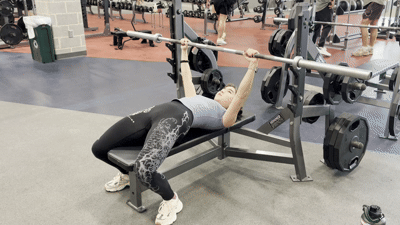

Muscle
Muscle Barbell Bench Presses
Equipment Needed

How To Do It
- Lie on a flat bench with your hands just outside shoulder width, then pinch your shoulder blades together and drive them into the bench.
- Take a deep breath and unrack the bar (with a spotter's help if needed), keeping your upper back tight as the weight settles.
- Unlock your elbows and slowly lower the bar in a curved line until it touches your lower chest.
- Press the bar back up in a curved line by driving yourself into the bench, pushing your feet into the floor, and extending your elbows.